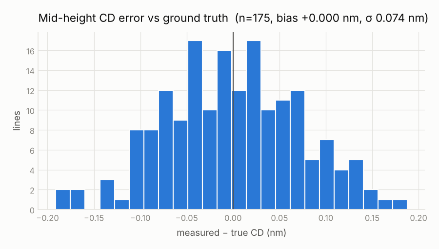
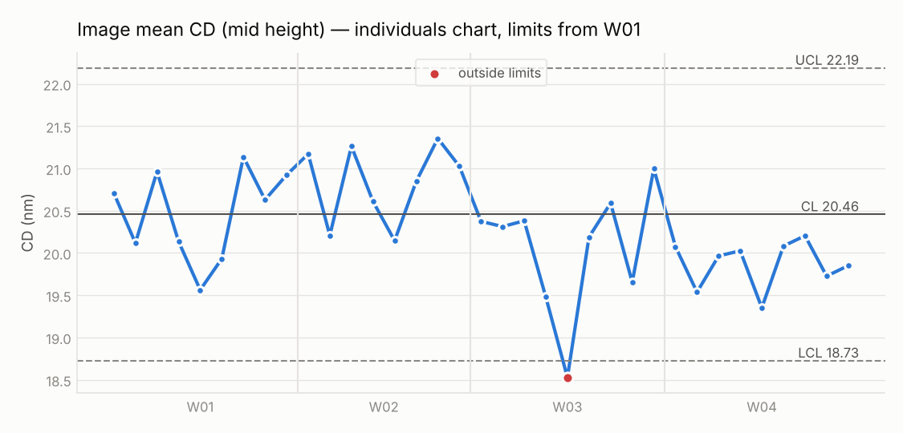
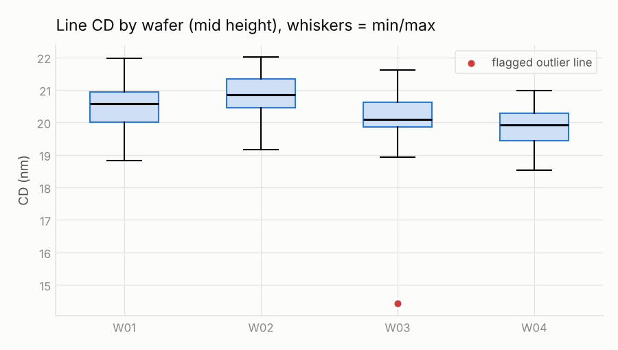
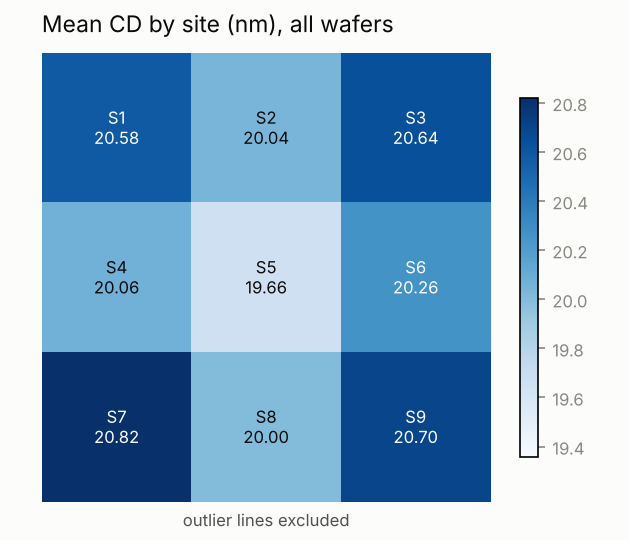
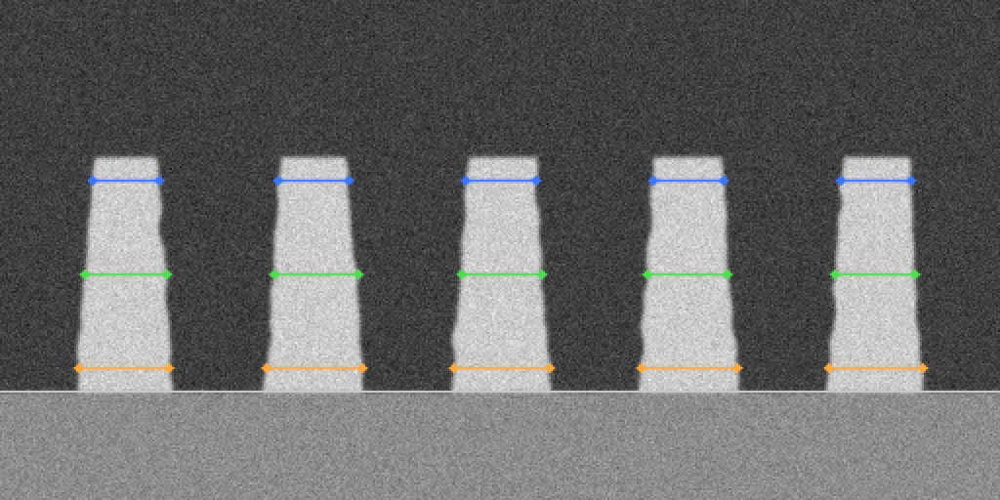
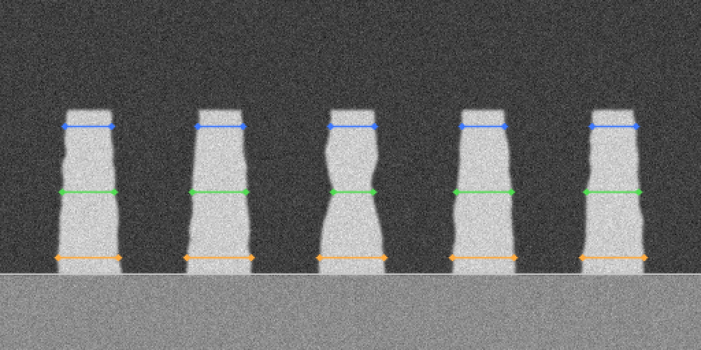

Source data/lot1 · 2026-11-18T20:08:27+00:00 · 36 images
| images | status | lines measured | mean CD mid (nm) | 3σ (nm) | range (nm) | outlier lines |
|---|---|---|---|---|---|---|
| 36 | ok: 35, rejected: 1 | 175 | 20.29 | 2.59 | 7.58 | 1 |
| lines | bias (nm) | σ (nm) | RMSE (nm) | max |error| (nm) |
|---|---|---|---|---|
| 175 | +0.000 | 0.074 | 0.074 | 0.191 |
| image | line | CD mid (nm) | robust z |
|---|---|---|---|
| W03_S05 | 2 | 14.43 | -8.4 |
| image | status | SNR | reason |
|---|---|---|---|
| W02_S08 | rejected | 1.0 | line/background contrast too low (SNR 1.0) |
| image | wafer | site | status | lines | CD bottom | CD mid | CD top | height | SWA (°) |
|---|---|---|---|---|---|---|---|---|---|
| W01_S01 | W01 | 1 | ok | 5 | 24.17 | 20.71 | 17.85 | 60.01 | 85.93 |
| W01_S02 | W01 | 2 | ok | 5 | 23.50 | 20.12 | 17.18 | 60.02 | 85.99 |
| W01_S03 | W01 | 3 | ok | 5 | 23.92 | 20.96 | 17.13 | 60.00 | 86.14 |
| W01_S04 | W01 | 4 | ok | 5 | 23.66 | 20.13 | 17.24 | 60.01 | 86.31 |
| W01_S05 | W01 | 5 | ok | 5 | 22.89 | 19.56 | 16.68 | 60.01 | 86.01 |
| W01_S06 | W01 | 6 | ok | 5 | 23.45 | 19.93 | 16.96 | 60.03 | 85.85 |
| W01_S07 | W01 | 7 | ok | 5 | 23.81 | 21.14 | 17.66 | 60.02 | 86.33 |
| W01_S08 | W01 | 8 | ok | 5 | 23.50 | 20.63 | 16.97 | 60.00 | 85.96 |
| W01_S09 | W01 | 9 | ok | 5 | 24.25 | 20.92 | 17.54 | 60.02 | 86.00 |
| W02_S01 | W02 | 1 | ok | 5 | 24.30 | 21.17 | 17.86 | 60.03 | 86.53 |
| W02_S02 | W02 | 2 | ok | 5 | 23.55 | 20.21 | 17.47 | 60.01 | 85.92 |
| W02_S03 | W02 | 3 | ok | 5 | 24.63 | 21.26 | 18.31 | 60.03 | 86.29 |
| W02_S04 | W02 | 4 | ok | 5 | 23.63 | 20.61 | 17.33 | 60.01 | 86.28 |
| W02_S05 | W02 | 5 | ok | 5 | 23.59 | 20.15 | 17.11 | 60.02 | 86.09 |
| W02_S06 | W02 | 6 | ok | 5 | 24.03 | 20.85 | 17.58 | 60.02 | 86.25 |
| W02_S07 | W02 | 7 | ok | 5 | 24.52 | 21.35 | 18.19 | 60.02 | 86.29 |
| W02_S08 | W02 | 8 | rejected | 0 | |||||
| W02_S09 | W02 | 9 | ok | 5 | 24.41 | 21.02 | 17.60 | 60.00 | 86.34 |
| W03_S01 | W03 | 1 | ok | 5 | 23.83 | 20.37 | 17.45 | 59.99 | 86.57 |
| W03_S02 | W03 | 2 | ok | 5 | 23.65 | 20.31 | 16.93 | 60.01 | 85.87 |
| W03_S03 | W03 | 3 | ok | 5 | 23.63 | 20.38 | 17.32 | 60.01 | 85.99 |
| W03_S04 | W03 | 4 | ok | 5 | 23.00 | 19.48 | 16.49 | 59.98 | 86.50 |
| W03_S05 | W03 | 5 | ok | 5 | 22.78 | 18.53 | 16.25 | 60.03 | 86.60 |
| W03_S06 | W03 | 6 | ok | 5 | 23.24 | 20.19 | 17.21 | 60.02 | 86.28 |
| W03_S07 | W03 | 7 | ok | 5 | 23.51 | 20.59 | 17.62 | 60.02 | 86.08 |
| W03_S08 | W03 | 8 | ok | 5 | 23.31 | 19.65 | 16.36 | 60.04 | 86.09 |
| W03_S09 | W03 | 9 | ok | 5 | 23.81 | 21.00 | 17.66 | 60.00 | 86.08 |
| W04_S01 | W04 | 1 | ok | 5 | 23.15 | 20.08 | 16.83 | 59.99 | 86.39 |
| W04_S02 | W04 | 2 | ok | 5 | 22.75 | 19.54 | 16.59 | 60.01 | 86.05 |
| W04_S03 | W04 | 3 | ok | 5 | 23.66 | 19.97 | 16.80 | 60.00 | 86.11 |
| W04_S04 | W04 | 4 | ok | 5 | 23.47 | 20.03 | 16.88 | 60.00 | 86.45 |
| W04_S05 | W04 | 5 | ok | 5 | 22.24 | 19.35 | 15.63 | 60.01 | 86.04 |
| W04_S06 | W04 | 6 | ok | 5 | 22.98 | 20.08 | 16.90 | 60.00 | 86.43 |
| W04_S07 | W04 | 7 | ok | 5 | 23.53 | 20.20 | 16.75 | 60.00 | 86.15 |
| W04_S08 | W04 | 8 | ok | 5 | 23.22 | 19.73 | 16.87 | 60.02 | 86.11 |
| W04_S09 | W04 | 9 | ok | 5 | 23.20 | 19.85 | 16.76 | 59.99 | 86.14 |





